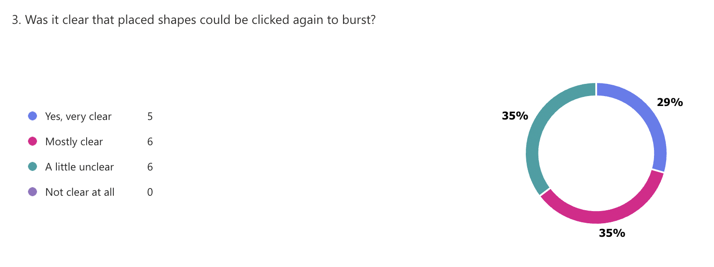
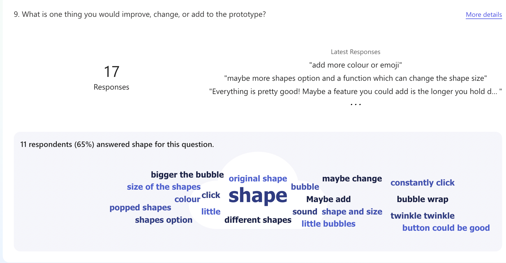

Previous Assignment Review
Design Development And Prototyping
Conceptual Response
Bubble Bloom is a small browser-based project that explores playful and low-pressure making through colour, shape, and sound. It is influenced by interactive experiences that let users experiment freely without needing advanced drawing or music skills. Instead of working like a normal drawing app, Bubble Bloom lets users place colourful shapes onto a full-screen canvas and activate them through a second click, turning them into bursts of colour and sound. The project starts from the idea that making something expressive online should feel approachable and enjoyable, rather than controlled by technical skill or the pressure of making something correct.
The main interaction design principles in Bubble Bloom are feedback and mapping. Feedback appears as immediate visual and audio responses after each action, which helps the project feel responsive, clear, and satisfying to use. Mapping emerges from the relationship among shape selection, colour selection, click position, and the resulting burst. These choices gradually affect the final visual result, so the user can build something personal through repeated interaction. Earlier design experiments were important in shaping this direction, especially in showing how simple actions can feel richer when visible change and response are clearly connected. My earlier project framing already identified feedback and mapping as important interaction design principles, but the current prototype applies them in a more focused and practical way.
The most distinctive part of Bubble Bloom is its two-step interaction. Instead of drawing directly onto the canvas, the user first places a shape and then clicks it again to trigger the burst. This changes the project from a simple visual effect into a system of placing and activating. The interaction feels less automatic and gives the project a clearer identity because the user is deciding where to place visual potential and when to release it. In this way, Bubble Bloom sits somewhere between drawing, pattern making, and playful audiovisual interaction.
Technical Approach

Bubble Bloom is currently developed as a browser-based prototype using HTML, CSS, and JavaScript, with Konva.js and Tone.js supporting the main interaction. HTML is used to structure the page, while CSS styles the toolbar, page layout, and visual hierarchy. JavaScript manages interaction logic and state changes. In addition, Konva.js is used to build the full-screen canvas, place shapes, and handle burst animation more effectively than relying only on standard DOM elements. Tone.js is used to add sound feedback so that visual interaction can also be reinforced through audio. This approach keeps the prototype visually clear while supporting the project’s audiovisual direction.
The prototype currently focuses on a small set of core features that support the main interaction loop. Users can select a shape and colour, place the shape onto the canvas, and click it again to trigger a burst of colour and sound. Additional controls, such as canvas background options, clear, and save functions, help the project feel more like a usable interactive system rather than only a visual effect. These technical choices directly support the project’s conceptual focus on feedback and mapping.
At this stage, the prototype is intentionally limited in scope. Rather than trying to build a full version application, the current version concentrates on testing whether the place-first, burst-second interaction is working clearly and effectively. More advanced features, such as stronger sound feedback, additional shape behaviours, and wider expressive controls, are being treated as future development. In addition, the attached system map is used to show how user input, stored settings, canvas interaction, and visual and audio output are connected.
Peer User Testing Reflection


Peer user testing showed that Bubble Bloom was generally easy to understand, but some parts of the interaction were still not fully clear. Figure 1. suggests that while many users understood that placed shapes could be clicked again to burst, a noticeable number of users were still unsure. This indicates that the issue is not only. The visibility of the instruction text, but also the visual communication of the interactive shapes themselves. At the moment, once a shape is placed on the canvas, it may not look clickable enough, so the second-step interaction is not always obvious.
Based on the feedback, I would improve the prototype in two ways. First, I would make the instructions more visible through a clearer placement, stronger text hierarchy, or a short pop-up dialogue when the page opens. Second, I would strengthen the hover effect of placed shapes so that users receive a clearer sign that the shape can be clicked again. For example, the shape could slightly enlarge, gain a stronger outline or glow, and show a pointer cursor on hover. These changes would improve learnability and make the interaction feel more intuitive.
In addition, Figure 2. showed that many users wanted the prototype to feel more playful and expressive. Because of this, I also want to develop richer sound effects and improve the save function so that only the drawing area is exported, rather than including the toolbar area. Overall, the feedback suggested that the next stage should focus less or adding random features and more on improving clarity, feedback, and the quality of the final output.
Project Timeline
Week 1 - Week 6
Bubble Bloom began as a small browser-based idea focused on playful visual interaction through colour, shape, and sound. In the early stage, the project was mainly interested in simple burst effects and immediate feedback. The aim was to create a low-pressure experience where users could make expressive outcomes without needing advanced drawing skills.
As the project developed, the prototype was built using HTML, CSS, JavaScript, Konva.js, and Tone.js. This stage established the technical foundation of the project, including canvas based interaction, burst animation, and basic sound response. However, the early version still felt closer to a visual effect than a creative tool.
A major change happened when the interaction was revised from an immediate burst system into a two-step process. Instead of bursting directly on click, users now place a shape first and click it again to trigger the burst. This was an important deviation from the initial plan. The earlier interaction was simpler, but it felt too automatic. The revised version made the project feel more deliberate and gave it a clearer identity as an interactive expressive tool.
Week 7
After the prototype was developed, peer user testing was carried out to evaluate clarity, engagement, and possible improvements. The feedback showed that the project was generally seen as playful, colourful, creative, and visually interesting. At the same time, it also revealed several problems. Some users were not fully clear that placed shapes could be clicked again to burst, which suggests that the interaction still needs stronger instruction and visual guidance. Other responses suggested improving the sound design, increasing variation, and refining the save function so that only the canvas area is exported.
Week 8 - Week 10
The next stage of development will focus on refinement rather than changing the concept completely. The first priority is to improve clarity by making the instruction text more visible and by strengthening the hover effect on placed shapes so they look clearly interactive. The second priority is to make the sound effect more fun, playful, and satisfying. The third priority is to improve the save function so that only the drawing area is exported, rather than including blank space caused by the toolbar area. These changes will help move Bubble Bloom from a functional prototype toward a more resolved and polished final version.